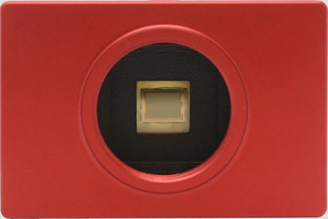
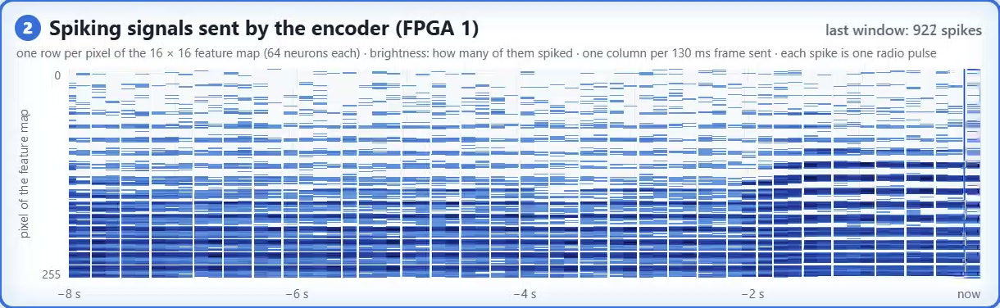
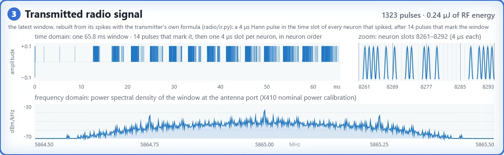
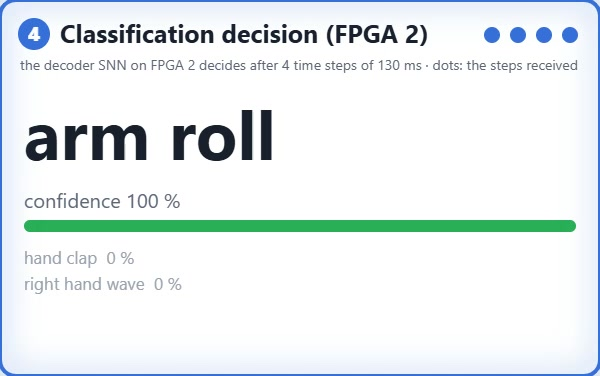
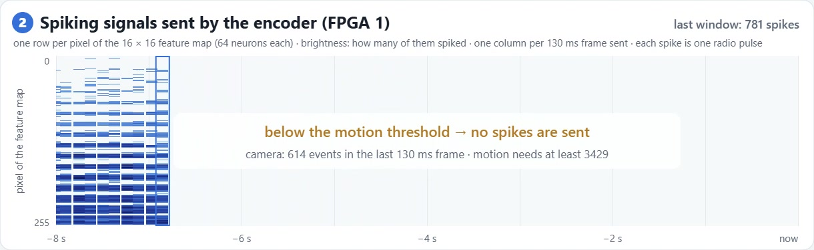

I
Events
One 130 ms frame of the event camera. Orange marks pixels that grew brighter, blue those that grew darker. A still scene leaves only the sensor's faint noise.

for an event camera, two FPGAs and the air
Two and a half minutes on the running system, with a guided voice-over. Near the end the presenter stands still, and the ensemble falls silent.
Six players in a row. Only spikes cross the air, and no computer sits in the loop.

Event camera
Each pixel reports only a change in brightness. Every 130 ms, the central 260 × 260 pixels make a frame.

FPGA 1 · encoder
The first two layers of the spiking network, in hardware.
1.29 ms per step
Radio · plays
Each spike becomes one 4 µs pulse, in its neuron's own time slot.
Radio · listens
Finds each window by its sync, then reads every slot by its energy.
FPGA 2 · decoder
Layers 2–5 and the readout, on the spikes that arrived.
1.07 ms per stepDecision
One of 11 gestures, after four frames. A still scene sends nothing.
The live screen, in the order the signal travels. Plates taken from the recording.
I
One 130 ms frame of the event camera. Orange marks pixels that grew brighter, blue those that grew darker. A still scene leaves only the sensor's faint noise.
II
What FPGA 1 sends: one row per pixel of its 16 × 16 feature map, one column per frame. Darker cells: more of that pixel's 64 neurons fired.

III
The window on the air, in time and in frequency. After 14 marker pulses, each neuron owns a 4 µs slot; a pulse there means it spiked.

IV
FPGA 2's verdict after four time steps, with its confidence.

No motion. No spikes. No radio.
When nothing moves, the camera reports only its own faint noise, below the encoder's motion threshold. The encoder stays idle and the transmitter sends nothing at all. Radio energy follows the spikes exactly: 14 marker pulses per window, plus one pulse per spike.

A neuron is known by where its pulse falls, so no addresses are sent. Each window opens with the 13-note Barker motif, whose signs the receiver locks onto, then one note for the step, then a slot for every neuron.
Not to scale: a real window has 16,384 neuron slots and lasts 65.8 ms at 1 MS/s. Every pulse is Hann-shaped, 4 µs long, at 5.865 GHz.
How softly can the radio play? Measured over the air on the lab setup, October and November 2026, with the network cut after its second layer.
| Dynamic | Pulse amplitude | Energy per pulse | Pulse SNR | Missed spikes | False spikes | Decisions as without radio |
|---|---|---|---|---|---|---|
| p | 0.1 · default | 0.18 nJ | 20.9 dB | 0 | 6 | 40 / 40 |
| pp | 0.07 | 0.089 nJ | 18.0 dB | 2 | 6 | 40 / 40 |
| ppp | 0.05 | 0.045 nJ | 16.1 dB | 70 | 34 | 40 / 40 |
| pppp | 0.035 | 0.022 nJ | 12.5 dB | 13% · 1 window lost | 5 | 39 / 40 |
40 test windows, 160 time steps, 159,004 spikes. RF energy at the transmitter's antenna port, from the radio's nominal power calibration; the radio's own DC power is not included.
Off-the-shelf parts.
iniVation DAVIS346, 346 × 260 pixels, on FPGA 1's USB port.
PYNQ-Z2 (Zynq-7020): the fabric runs the network, the ARM cores handle camera and network.
NI Ettus USRP X410 software-defined radios, at 5.865 GHz and 1 MS/s.
Product photos: iniVation (DAVIS346), AMD (PYNQ-Z2), NI Ettus Research (USRP X410).